You can use topology spread constraints to control how Pods are spread across your cluster among failure-domains such as regions, zones, nodes, and other user-defined topology domains. This can help to achieve high availability as well as efficient resource utilization.
You can set cluster-level constraints as a default, or configure topology spread constraints for individual workloads.
Motivation
Imagine that you have a cluster of up to twenty nodes, and you want to run a workload that automatically scales how many replicas it uses. There could be as few as two Pods or as many as fifteen. When there are only two Pods, you'd prefer not to have both of those Pods run on the same node: you would run the risk that a single node failure takes your workload offline.
In addition to this basic usage, there are some advanced usage examples that enable your workloads to benefit on high availability and cluster utilization.
As you scale up and run more Pods, a different concern becomes important. Imagine that you have three nodes running five Pods each. The nodes have enough capacity to run that many replicas; however, the clients that interact with this workload are split across three different datacenters (or infrastructure zones). Now you have less concern about a single node failure, but you notice that latency is higher than you'd like, and you are paying for network costs associated with sending network traffic between the different zones.
You decide that under normal operation you'd prefer to have a similar number of replicas scheduled into each infrastructure zone, and you'd like the cluster to self-heal in the case that there is a problem.
Pod topology spread constraints offer you a declarative way to configure that.
topologySpreadConstraints
field
The Pod API includes a field,
spec.topologySpreadConstraints. The usage of this field
looks like the following:
---
apiVersion: v1
kind: Pod
metadata:
name: example-pod
spec:
# Configure a topology spread constraint
topologySpreadConstraints:
- maxSkew: <integer>
minDomains: <integer> # optional
topologyKey: <string>
whenUnsatisfiable: <string>
labelSelector: <object>
matchLabelKeys: <list> # optional; beta since v1.27
nodeAffinityPolicy: [Honor|Ignore] # optional; beta since v1.26
nodeTaintsPolicy: [Honor|Ignore] # optional; beta since v1.26
### other Pod fields go hereNote:
There can only be one topologySpreadConstraint for a
given topologyKey and whenUnsatisfiable value.
For example, if you have defined a topologySpreadConstraint
that uses the topologyKey "kubernetes.io/hostname" and
whenUnsatisfiable value "DoNotSchedule", you can only add
another topologySpreadConstraint for the
topologyKey "kubernetes.io/hostname" if you use a different
whenUnsatisfiable value.
You can read more about this field by running
kubectl explain Pod.spec.topologySpreadConstraints or refer
to the scheduling
section of the API reference for Pod.
Spread constraint definition
You can define one or multiple topologySpreadConstraints
entries to instruct the kube-scheduler how to place each incoming Pod in
relation to the existing Pods across your cluster. Those fields are:
maxSkew describes the degree to which Pods may be unevenly distributed. You must specify this field and the number must be greater than zero. Its semantics differ according to the value of
whenUnsatisfiable:- if you select
whenUnsatisfiable: DoNotSchedule, thenmaxSkewdefines the maximum permitted difference between the number of matching pods in the target topology and the global minimum (the minimum number of matching pods in an eligible domain or zero if the number of eligible domains is less than MinDomains). For example, if you have 3 zones with 2, 2 and 1 matching pods respectively,MaxSkewis set to 1 then the global minimum is 1. - if you select
whenUnsatisfiable: ScheduleAnyway, the scheduler gives higher precedence to topologies that would help reduce the skew.
- if you select
minDomains indicates a minimum number of eligible domains. This field is optional. A domain is a particular instance of a topology. An eligible domain is a domain whose nodes match the node selector.
Note:
Before Kubernetes v1.30, the
minDomainsfield was only available if theMinDomainsInPodTopologySpreadfeature gate was enabled (default since v1.28). In older Kubernetes clusters it might be explicitly disabled or the field might not be available.- The value of
minDomainsmust be greater than 0, when specified. You can only specifyminDomainsin conjunction withwhenUnsatisfiable: DoNotSchedule. - When the number of eligible domains with match topology keys is less
than
minDomains, Pod topology spread treats global minimum as 0, and then the calculation ofskewis performed. The global minimum is the minimum number of matching Pods in an eligible domain, or zero if the number of eligible domains is less thanminDomains. - When the number of eligible domains with matching topology keys
equals or is greater than
minDomains, this value has no effect on scheduling. - If you do not specify
minDomains, the constraint behaves as ifminDomainsis 1.
- The value of
topologyKey is the key of node labels. Nodes that have a label with this key and identical values are considered to be in the same topology. We call each instance of a topology (in other words, a <key, value> pair) a domain. The scheduler will try to put a balanced number of pods into each domain. Also, we define an eligible domain as a domain whose nodes meet the requirements of nodeAffinityPolicy and nodeTaintsPolicy.
whenUnsatisfiable indicates how to deal with a Pod if it doesn't satisfy the spread constraint:
DoNotSchedule(default) tells the scheduler not to schedule it.ScheduleAnywaytells the scheduler to still schedule it while prioritizing nodes that minimize the skew.
labelSelector is used to find matching Pods. Pods that match this label selector are counted to determine the number of Pods in their corresponding topology domain. See Label Selectors for more details.
matchLabelKeys is a list of pod label keys to select the group of pods over which the spreading skew will be calculated. At a pod creation, the kube-apiserver uses those keys to lookup values from the incoming pod labels, and those key-value labels will be merged with any existing
labelSelector. The same key is forbidden to exist in bothmatchLabelKeysandlabelSelector.matchLabelKeyscannot be set whenlabelSelectorisn't set. Keys that don't exist in the pod labels will be ignored. A null or empty list means only match against thelabelSelector.Caution:
It's not recommended to use
matchLabelKeyswith labels that might be updated directly on pods. Even if you edit the pod's label that is specified atmatchLabelKeysdirectly, (that is, you edit the Pod and not a Deployment), kube-apiserver doesn't reflect the label update onto the mergedlabelSelector.With
matchLabelKeys, you don't need to update thepod.specbetween different revisions. The controller/operator just needs to set different values to the same label key for different revisions. For example, if you are configuring a Deployment, you can use the label keyed with pod-template-hash, which is added automatically by the Deployment controller, to distinguish between different revisions in a single Deployment.topologySpreadConstraints: - maxSkew: 1 topologyKey: kubernetes.io/hostname whenUnsatisfiable: DoNotSchedule labelSelector: matchLabels: app: foo matchLabelKeys: - pod-template-hashNote:
The
matchLabelKeysfield is a beta-level field and enabled by default in 1.27. You can disable it by disabling theMatchLabelKeysInPodTopologySpreadfeature gate.Before v1.34,
matchLabelKeyswas handled implicitly. Since v1.34, key-value labels corresponding tomatchLabelKeysare explicitly merged intolabelSelector. You can disable it and revert to the previous behavior by disabling theMatchLabelKeysInPodTopologySpreadSelectorMergefeature gate of kube-apiserver.nodeAffinityPolicy indicates how we will treat Pod's nodeAffinity/nodeSelector when calculating pod topology spread skew. Options are:
- Honor: only nodes matching nodeAffinity/nodeSelector are included in the calculations.
- Ignore: nodeAffinity/nodeSelector are ignored. All nodes are included in the calculations.
If this value is null, the behavior is equivalent to the Honor policy.
Note:
The
nodeAffinityPolicybecame beta in 1.26 and graduated to GA in 1.33. It's enabled by default in beta, you can disable it by disabling theNodeInclusionPolicyInPodTopologySpreadfeature gate.nodeTaintsPolicy indicates how we will treat node taints when calculating pod topology spread skew. Options are:
- Honor: nodes without taints, along with tainted nodes for which the incoming pod has a toleration, are included.
- Ignore: node taints are ignored. All nodes are included.
If this value is null, the behavior is equivalent to the Ignore policy.
Note:
The
nodeTaintsPolicybecame beta in 1.26 and graduated to GA in 1.33. It's enabled by default in beta, you can disable it by disabling theNodeInclusionPolicyInPodTopologySpreadfeature gate.
When a Pod defines more than one
topologySpreadConstraint, those constraints are combined
using a logical AND operation: the kube-scheduler looks for a node for
the incoming Pod that satisfies all the configured constraints.
Node labels
Topology spread constraints rely on node labels to identify the topology domain(s) that each node is in. For example, a node might have labels:
region: us-east-1
zone: us-east-1aNote:
For brevity, this example doesn't use the well-known label
keys topology.kubernetes.io/zone and
topology.kubernetes.io/region. However, those registered
label keys are nonetheless recommended rather than the private
(unqualified) label keys region and zone that
are used here.
You can't make a reliable assumption about the meaning of a private label key between different contexts.
Suppose you have a 4-node cluster with the following labels:
NAME STATUS ROLES AGE VERSION LABELS
node1 Ready <none> 4m26s v1.16.0 node=node1,zone=zoneA
node2 Ready <none> 3m58s v1.16.0 node=node2,zone=zoneA
node3 Ready <none> 3m17s v1.16.0 node=node3,zone=zoneB
node4 Ready <none> 2m43s v1.16.0 node=node4,zone=zoneBThen the cluster is logically viewed as below:

Consistency
You should set the same Pod topology spread constraints on all pods in a group.
Usually, if you are using a workload controller such as a Deployment, the pod template takes care of this for you. If you mix different spread constraints then Kubernetes follows the API definition of the field; however, the behavior is more likely to become confusing and troubleshooting is less straightforward.
You need a mechanism to ensure that all the nodes in a topology
domain (such as a cloud provider region) are labeled consistently. To
avoid you needing to manually label nodes, most clusters automatically
populate well-known labels such as kubernetes.io/hostname.
Check whether your cluster supports this.
Topology spread constraint examples
Example: one topology spread constraint
Suppose you have a 4-node cluster where 3 Pods labeled
foo: bar are located in node1, node2 and node3
respectively:

If you want an incoming Pod to be evenly spread with existing Pods across zones, you can use a manifest similar to:
pods/topology-spread-constraints/one-constraint.yaml
kind: Pod
apiVersion: v1
metadata:
name: mypod
labels:
foo: bar
spec:
topologySpreadConstraints:
- maxSkew: 1
topologyKey: zone
whenUnsatisfiable: DoNotSchedule
labelSelector:
matchLabels:
foo: bar
containers:
- name: pause
image: registry.k8s.io/pause:3.1From that manifest, topologyKey: zone implies the even
distribution will only be applied to nodes that are labeled
zone: <any value> (nodes that don't have a
zone label are skipped). The field
whenUnsatisfiable: DoNotSchedule tells the scheduler to let
the incoming Pod stay pending if the scheduler can't find a way to
satisfy the constraint.
If the scheduler placed this incoming Pod into zone A,
the distribution of Pods would become [3, 1]. That means
the actual skew is then 2 (calculated as 3 - 1), which
violates maxSkew: 1. To satisfy the constraints and context
for this example, the incoming Pod can only be placed onto a node in
zone B:

OR

You can tweak the Pod spec to meet various kinds of requirements:
- Change
maxSkewto a bigger value - such as2- so that the incoming Pod can be placed into zoneAas well. - Change
topologyKeytonodeso as to distribute the Pods evenly across nodes instead of zones. In the above example, ifmaxSkewremains1, the incoming Pod can only be placed onto the nodenode4. - Change
whenUnsatisfiable: DoNotScheduletowhenUnsatisfiable: ScheduleAnywayto ensure the incoming Pod to be always schedulable (suppose other scheduling APIs are satisfied). However, it's preferred to be placed into the topology domain which has fewer matching Pods. (Be aware that this preference is jointly normalized with other internal scheduling priorities such as resource usage ratio).
Example: multiple topology spread constraints
This builds upon the previous example. Suppose you have a 4-node
cluster where 3 existing Pods labeled foo: bar are located
on node1, node2 and node3 respectively:
You can combine two topology spread constraints to control the spread of Pods both by node and by zone:
pods/topology-spread-constraints/two-constraints.yaml
kind: Pod
apiVersion: v1
metadata:
name: mypod
labels:
foo: bar
spec:
topologySpreadConstraints:
- maxSkew: 1
topologyKey: zone
whenUnsatisfiable: DoNotSchedule
labelSelector:
matchLabels:
foo: bar
- maxSkew: 1
topologyKey: node
whenUnsatisfiable: DoNotSchedule
labelSelector:
matchLabels:
foo: bar
containers:
- name: pause
image: registry.k8s.io/pause:3.1In this case, to match the first constraint, the incoming Pod can
only be placed onto nodes in zone B; while in terms of the
second constraint, the incoming Pod can only be scheduled to the node
node4. The scheduler only considers options that satisfy
all defined constraints, so the only valid placement is onto node
node4.
Example: conflicting topology spread constraints
Multiple constraints can lead to conflicts. Suppose you have a 3-node cluster across 2 zones:

If you were to apply two-constraints.yaml
(the manifest from the previous example) to this
cluster, you would see that the Pod mypod stays in the
Pending state. This happens because: to satisfy the first
constraint, the Pod mypod can only be placed into zone
B; while in terms of the second constraint, the Pod
mypod can only schedule to node node2. The
intersection of the two constraints returns an empty set, and the
scheduler cannot place the Pod.
To overcome this situation, you can either increase the value of
maxSkew or modify one of the constraints to use
whenUnsatisfiable: ScheduleAnyway. Depending on
circumstances, you might also decide to delete an existing Pod manually
- for example, if you are troubleshooting why a bug-fix rollout is not
making progress.
Interaction with node affinity and node selectors
The scheduler will skip the non-matching nodes from the skew
calculations if the incoming Pod has spec.nodeSelector or
spec.affinity.nodeAffinity defined.
Example: topology spread constraints with node affinity
Suppose you have a 5-node cluster ranging across zones A to C:

and you know that zone C must be excluded. In this case,
you can compose a manifest as below, so that Pod mypod will
be placed into zone B instead of zone C.
Similarly, Kubernetes also respects spec.nodeSelector.
pods/topology-spread-constraints/one-constraint-with-nodeaffinity.yaml
kind: Pod
apiVersion: v1
metadata:
name: mypod
labels:
foo: bar
spec:
topologySpreadConstraints:
- maxSkew: 1
topologyKey: zone
whenUnsatisfiable: DoNotSchedule
labelSelector:
matchLabels:
foo: bar
affinity:
nodeAffinity:
requiredDuringSchedulingIgnoredDuringExecution:
nodeSelectorTerms:
- matchExpressions:
- key: zone
operator: NotIn
values:
- zoneC
containers:
- name: pause
image: registry.k8s.io/pause:3.1Implicit conventions
There are some implicit conventions worth noting here:
Only the Pods holding the same namespace as the incoming Pod can be matching candidates.
The scheduler only considers nodes that have all
topologySpreadConstraints[*].topologyKeypresent at the same time. Nodes missing any of thesetopologyKeysare bypassed. This implies that:- any Pods located on those bypassed nodes do not impact
maxSkewcalculation - in the above example, suppose the nodenode1does not have a label "zone", then the 2 Pods will be disregarded, hence the incoming Pod will be scheduled into zoneA. - the incoming Pod has no chances to be scheduled onto this kind of
nodes - in the above example, suppose a node
node5has the mistyped labelzone-typo: zoneC(and nozonelabel set). After nodenode5joins the cluster, it will be bypassed and Pods for this workload aren't scheduled there.
- any Pods located on those bypassed nodes do not impact
Be aware of what will happen if the incoming Pod's
topologySpreadConstraints[*].labelSelectordoesn't match its own labels. In the above example, if you remove the incoming Pod's labels, it can still be placed onto nodes in zoneB, since the constraints are still satisfied. However, after that placement, the degree of imbalance of the cluster remains unchanged - it's still zoneAhaving 2 Pods labeled asfoo: bar, and zoneBhaving 1 Pod labeled asfoo: bar. If this is not what you expect, update the workload'stopologySpreadConstraints[*].labelSelectorto match the labels in the pod template.
Cluster-level default constraints
It is possible to set default topology spread constraints for a cluster. Default topology spread constraints are applied to a Pod if, and only if:
- It doesn't define any constraints in its
.spec.topologySpreadConstraints. - It belongs to a Service, ReplicaSet, StatefulSet or ReplicationController.
Default constraints can be set as part of the
PodTopologySpread plugin arguments in a scheduling
profile. The constraints are specified with the same API above, except that
labelSelector must be empty. The selectors are calculated
from the Services, ReplicaSets, StatefulSets or ReplicationControllers
that the Pod belongs to.
An example configuration might look like follows:
apiVersion: kubescheduler.config.k8s.io/v1
kind: KubeSchedulerConfiguration
profiles:
- schedulerName: default-scheduler
pluginConfig:
- name: PodTopologySpread
args:
defaultConstraints:
- maxSkew: 1
topologyKey: topology.kubernetes.io/zone
whenUnsatisfiable: ScheduleAnyway
defaultingType: ListBuilt-in default constraints
Feature state:
Stable since Kubernetes v1.24
If you don't configure any cluster-level default constraints for pod topology spreading, then kube-scheduler acts as if you specified the following default topology constraints:
defaultConstraints:
- maxSkew: 3
topologyKey: "kubernetes.io/hostname"
whenUnsatisfiable: ScheduleAnyway
- maxSkew: 5
topologyKey: "topology.kubernetes.io/zone"
whenUnsatisfiable: ScheduleAnywayAlso, the legacy SelectorSpread plugin, which provides
an equivalent behavior, is disabled by default.
Note:
The PodTopologySpread plugin does not score the nodes
that don't have the topology keys specified in the spreading
constraints. This might result in a different default behavior compared
to the legacy SelectorSpread plugin when using the default
topology constraints.
If your nodes are not expected to have both
kubernetes.io/hostname and
topology.kubernetes.io/zone labels set, define your own
constraints instead of using the Kubernetes defaults.
If you don't want to use the default Pod spreading constraints for
your cluster, you can disable those defaults by setting
defaultingType to List and leaving empty
defaultConstraints in the PodTopologySpread
plugin configuration:
apiVersion: kubescheduler.config.k8s.io/v1
kind: KubeSchedulerConfiguration
profiles:
- schedulerName: default-scheduler
pluginConfig:
- name: PodTopologySpread
args:
defaultConstraints: []
defaultingType: ListComparison with podAffinity and podAntiAffinity
In Kubernetes, inter-Pod affinity and anti-affinity control how Pods are scheduled in relation to one another - either more packed or more scattered.
podAffinity- attracts Pods; you can try to pack any number of Pods into qualifying topology domain(s).
podAntiAffinity-
repels Pods. If you set this to
requiredDuringSchedulingIgnoredDuringExecutionmode then only a single Pod can be scheduled into a single topology domain; if you choosepreferredDuringSchedulingIgnoredDuringExecutionthen you lose the ability to enforce the constraint.
For finer control, you can specify topology spread constraints to distribute Pods across different topology domains - to achieve either high availability or cost-saving. This can also help on rolling update workloads and scaling out replicas smoothly.
For more context, see the Motivation section of the enhancement proposal about Pod topology spread constraints.
Known limitations
There's no guarantee that the constraints remain satisfied when Pods are removed. For example, scaling down a Deployment may result in imbalanced Pods distribution.
You can use a tool such as the Descheduler to rebalance the Pods distribution.
Pods matched on tainted nodes are respected. See Issue 80921.
The scheduler doesn't have prior knowledge of all the zones or other topology domains that a cluster has. They are determined from the existing nodes in the cluster. This could lead to a problem in autoscaled clusters, when a node pool (or node group) is scaled to zero nodes, and you're expecting the cluster to scale up, because, in this case, those topology domains won't be considered until there is at least one node in them.
You can work around this by using a Node autoscaler that is aware of Pod topology spread constraints and is also aware of the overall set of topology domains.
Pods that don't match their own labelSelector create "ghost pods". If a pod's labels don't match the
labelSelectorin its topology spread constraint, the pod won't count itself in spread calculations. This means:- Multiple such pods can just accumulate on the same topology (until matching pods are newly created/deleted) because those pod's schedule don't change a spreading calculation result.
- The spreading constraint works in an unintended way, most likely not matching your expectations
Ensure your pod's labels match the
labelSelectorin your spread constraints. Typically, a pod should match its own topology spread constraint selector.
What's next
- The blog article Introducing
PodTopologySpread explains
maxSkewin some detail, as well as covering some advanced usage examples. - Read the scheduling section of the API reference for Pod.